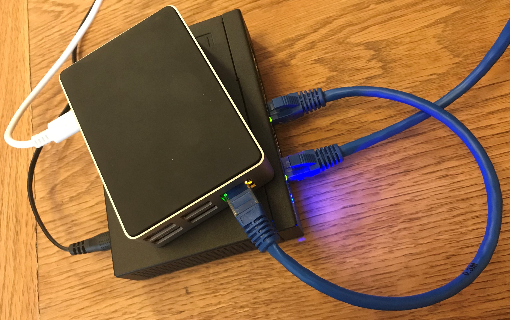
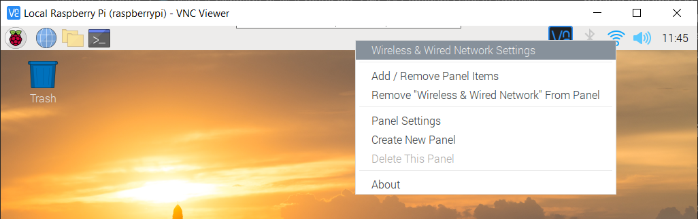
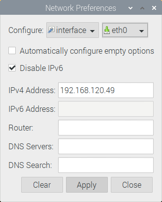
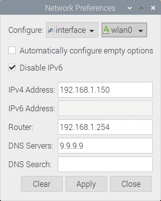
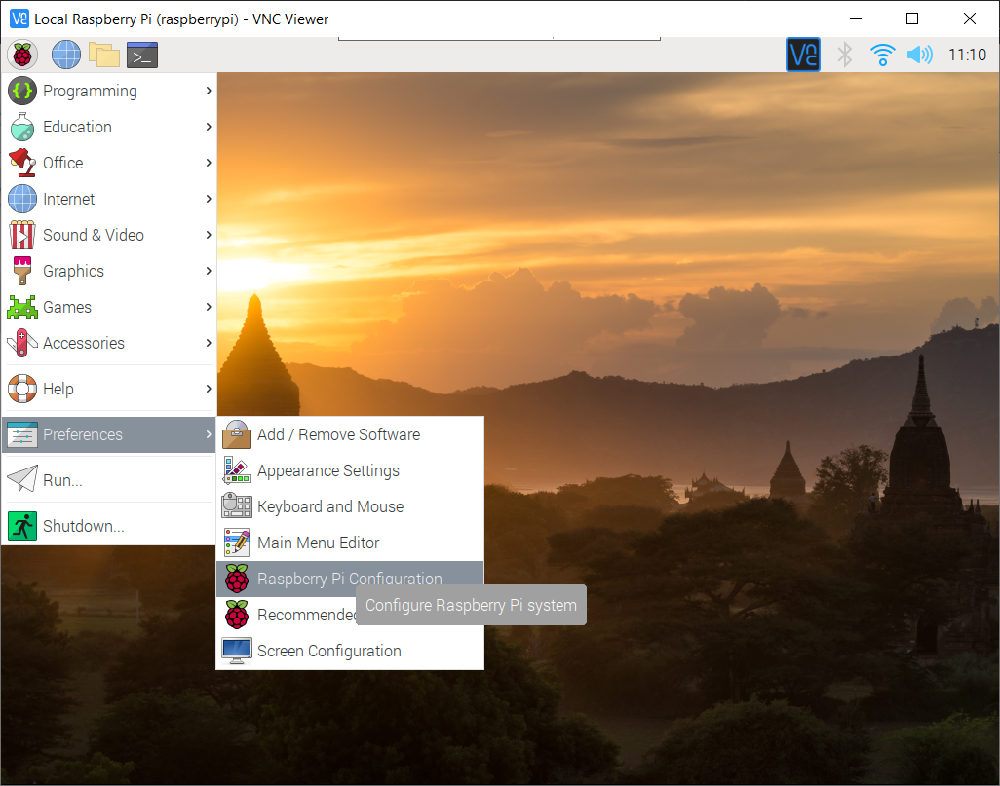
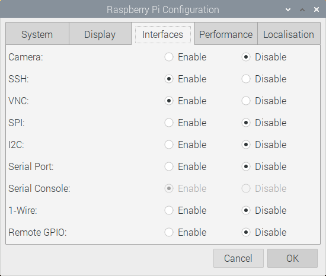

Using Your Raspberry Pi as a Router
In this post, I will show you how the Raspberry Pi 4 (Model B) running Raspberry Pi OS (formerly Raspbian) can be configured as a router. This is something I’ve thought about doing for a while, but there is limited up-to-date information on the subject, so I decided to do some research, and provide my findings here in an easily digestible format.
Background
The primary role I want my Pi router to serve, is forwarding traffic from its Ethernet port, to its wireless interface. My PC (a Windows 10 laptop) will plug-in (via a network switch) to the Pi’s ethernet port, and the Pi will access the Internet via my home router using Wi-Fi. My laptop will be able to share this Internet connection through network address translation (NAT), a standard feature of any home router.
I imagine this is not the way in which most people use their router. If you want to use your Pi as a wireless router, and allow devices to connect to it using Wi-Fi, you’ll need to make some changes to the steps I outline in this article.
Something else that’s important to me, is that the Pi router connects to a VPN, and shares that connection too. This is something I’ll write up in a future post.
Figure 1 shows my Raspberry Pi 4 (in a Flirc case) sitting on top of a 5-port Linksys LGS105 network switch (https://www.linksys.com/gb/p/P-LGS105/). You could do away with the switch and connect your Pi directly to your PC via an ethernet cable. The cable that goes off to the right is connected to my PC.

Requirements
The steps outlined in this tutorial were tested with the following entities, some of which are required, and some of which could be omitted (or altered) depending on your individual needs:
- A Raspberry Pi 4 Model B (4GB)
- A fresh install of Raspberry Pi OS (formerly known as Raspbian)
- A network switch
- 2 Ethernet cables
- An existing Wi-Fi router with an Internet connection
- A Windows 10 PC (desktop or laptop)
Check Your Internet Connection
To begin with, I will assume that you’re using your Pi’s desktop interface. If you’re comfortable with the command line (perhaps you don’t even have the desktop enabled) then these initial steps should not be difficult for you to replicate using the command line.
Make sure your Raspberry Pi can access the Internet using its internal wireless interface. An easy way to test this is by opening the web browser, and making sure you can browse your usual sites. Ensure you’re connected to your home Wi-Fi, and that your not using Ethernet for your Internet connection. The Ethernet port will be used by your PC later on.
Configure Static IP Addresses
Your Pi has two network interfaces, one of which is wireless, called wlan0, and one of which is wired, called eth0. I advise that you set static IP addresses for both. You can do this from the Pi’s desktop view by right clicking on the Wi-Fi icon in the top right of the screen (to the left of the clock and sound icons). After right-clicking, select Wireless & Wired Network Settings from the context menu, as shown in figure 2.

A dialogue box for managing network interfaces will appear — see figure 3. Choose eth0 from the right drop-down box (leave the first as interface). Un-check the Automatically configure empty options box. You can disable IPv6 too, which I like to do to keep things simple. Provide an IPv4 address in the box. If you’re not sure what to use, 192.168.120.49 will do. This is the address that your PC will use to connect to the Pi once plugged in with an Ethernet cable. Make a note of this IP address. This interface (eth0) will not be used by the Pi to connect to the internet, which is why you should not supply anything to the Router, DNS Servers or DNS Search boxes.

Now that you’ve set a static IP for eth0, you should review the settings for wlan0, by selecting wlan0 from the right drop-down box.
Warning: If you’re not exactly sure what you’re doing here, you should leave these settings as they are. This includes leaving the Automatically configure empty options box selected.
Figure 4 shows my settings, but these are unlikely to work for you, with the exception of DNS Servers. I like to use Quad9 (https://www.quad9.net/) as my DNS provider.

You do not need to test your settings just yet; I’ll show you how to do that shortly.
Enable SSH and VNC
If you haven’t already, enable SSH and VNC on your Pi by navigating to the Start menu, then choosing Preferences, and then Raspberry Pi Configuration, as shown in figure 5.

Choose the Interfaces tab, shown in figure 6, and make sure you have SSH and VNC selected. These services will allow you to connect to your Pi, and control it from your PC. You may already be doing this (perhaps you noticed from the screenshots that I am).

No further configuration is required for these services to work but at some point I advise you make changes to your Pi’s /etc/ssh/sshd_config file in order to improve security. I did make some changes, whilst putting this tutorial together, but then undid them as it caused connection issues.
Even if you do not make changes to your SSH daemon’s configuration, you can mitigate some of the risks involved with running SSH and VNC, by using a firewall. I’ll introduce you to a firewall later on.
Connect via Ethernet Cable
If you haven’t already, connect your Pi to your PC either directly with an Ethernet cable, or via a network switch with a couple of Ethernet cables. The latter is my preference, and what I’m assuming you’ve done.
From now on, you will control your Pi via SSH and VNC over this wired Ethernet connection. VNC is not strictly necessary, but I like to have a couple of options for connecting and troubleshooting.
Note: If you are using VNC to access your Raspberry Pi, rather than SSH, you may encounter a particularly unhelpful error message at some point duing your adventures, “Cannot currently show the desktop”. If this happens to you, try running raspi-config from the command line and changing your Pi’s screen resoulation (it’s under advanced options). Running out of storage space on your Pi’s SD card can also cause this problem!
When you connect your Windows 10 PC with an Ethernet cable you should see a new icon appear on the task bar, in the bottom-right of your screen (to the left of the clock). I recommend temporarily disabling your PC’s Wi-Fi connection, assuming this is how you get your Internet, as this will make it clear you’ve achieved a wired connection through your Pi (when you get to that point). Just make sure you can still access this article before disconnecting!
Assuming you’re using Windows 10 on your PC, you can connect to your Pi with SSH by opening a command prompt (cmd) and typing the following command, where is the IP address of your Raspberry Pi’s wired (not wireless) network interface:
ssh pi@<IPAddress>
Note: If your Windows 10 PC does not recognise this ssh command, then its probably not installed. Use the windows key to bring up the start menu, and starting typing optional features. Click Manage optional features and then choose Add a feature. Make sure that you have OpenSSH Client installed (your Pi is the server in this instance).
In my case, the command, the prompt that follows, and my login output looks like the following (just enter your usual password — for the pi user — when prompted).
C:\Users\Jim>ssh pi@192.168.120.49
pi@192.168.120.49's password:
Linux raspberrypi 4.19.118-v7l+ #1311 SMP Mon Apr 27 14:26:42 BST 2020 armv7l
The programs included with the Debian GNU/Linux system are free software;
the exact distribution terms for each program are described in the
individual files in /usr/share/doc/*/copyright.
Debian GNU/Linux comes with ABSOLUTELY NO WARRANTY, to the extent
permitted by applicable law.
Last login: Wed Jul 15 08:52:26 2020 from 192.168.120.139
pi@raspberrypi:~ $
Test Your Internet Connection, Again
Once you’re logged in to your Pi using SSH, over a wired connection, check to see if your Raspberry Pi can still access the Internet using its Wi-Fi connection — wlan0. There’s a good chance it will no longer be able to do so!
This inability to access the Internet may have come about because eth0 is now taking priority over wlan0. In other words, your Pi is attempting to access the Internet over the wire that’s now plugged into it. Using the route command will help to show what’s going on:
pi@raspberrypi:~ $ route
Kernel IP routing table
Destination Gateway Genmask Flags Metric Ref Use Iface
192.168.120.0 0.0.0.0 255.255.255.0 U 200 0 0 eth0
Routing
Your Kernel IP routing table may look something like the previous output. There is only one route in this table, and that route does not provide Internet access. You want your routing table to look like the following output, which I’ll show you how to achieve shortly:
pi@raspberrypi:~ $ route
Kernel IP routing table
Destination Gateway Genmask Flags Metric Ref Use Iface
default 192.168.1.254 0.0.0.0 UG 100 0 0 wlan0
192.168.1.0 0.0.0.0 255.255.255.0 U 100 0 0 wlan0
192.168.120.0 0.0.0.0 255.255.255.0 U 200 0 0 eth0
Notice the top entry or line, beginning with the word default. This default route has a Gateway value of 192.168.1.254 — the IP address of my home router. The last column (Iface) of the top line shows wlan0. This means that my wireless interface is utilised for this default route. If you’re routing table shows only eth0, or wlan0 is not being using for the default route with a valid Gateway, then your Internet will not work. I’ll address this routing issue next.
Editing Network Interfaces
Enter the command sudo nano /etc/dhcpcd.conf to open the /etc/dhcpcd.conf file with super-user privileges, using the nano text editor. Do not be tempted to edit /etc/network/interfaces, which historically was the file used for managing network interfaces (the name certainly checks out, but making changes here could cause problems). Scroll down to the bottom of /etc/dhcpcd.conf. Any changes that you made with the Pi’s GUI-based network manager earlier will be visible here — at the end this file. I will briefly explain what each of the key elements in the text below mean, so that you can edit your own file to your specifications.
auto wlan0
interface wlan0
static ip_address=192.168.1.150
static routers=192.168.1.254
static domain_name_servers=9.9.9.9
static domain_search=
noipv6
metric 100
auto eth0
interface eth0
static ip_address=192.168.120.49
static routers=
static domain_name_servers=
static domain_search=
noipv6
metric 200
The first block of text relates to your Pi’s wireless device, and the second block relates to the wired ethernet interface. Here’s what the keywords mean:
- auto — bring the interface up automatically.
- wlan0 /eth0 — the names of the wireless and wired interfaces respectively.
- interface — defines the start of a list of settings for the given interface.
- static — use to define a static IP address. You may not want to do this for wlan0.
- noipv6 — disable IPv6.
- metric — defines the priority of the interface. Lower number means higher priority.
Make sure you add a metric line to each interface. By adding metric 100 to wlan0, and a higher number, metric 200 for example to eth0, you tell the system that wlan0 should take priority over eth1. This is what you want.
You can probably leave whatever options are already resent for wlan0, and simply add the metric line.
Power Management Issues
Another problem that can occur with the Raspberry Pi 4, is that the wireless network interface just stops working. This is likely due to a power saving feature, designed to turn off Wi-Fi when it is not in use. I recommend disabling that feature. The best way I’ve found to do that so far is by running a script at system start-up. Before you do that, run iwconfig (a tool designed for managing wireless interfaces) which should present output similar to the following:
eth0 no wireless extensions.
wlan0 IEEE 802.11 ESSID:"PLUSNET-76CN"
Mode:Managed Frequency:2.462 GHz Access Point: D0:57:94:BA:3E:E0
Bit Rate=65 Mb/s Tx-Power=31 dBm
Retry short limit:7 RTS thr:off Fragment thr:off
Power Management:on
Link Quality=64/70 Signal level=-46 dBm
Rx invalid nwid:0 Rx invalid crypt:0 Rx invalid frag:0
Tx excessive retries:0 Invalid misc:0 Missed beacon:0
lo no wireless extensions.
Notice the Power Management:on line. You want to turn it off. You can do that temporarily using sudo iwconfig wlan0 power off but the change will not persist after reboot. To make a startup script, edit the /etc/rc.local file. You will need to use sudo nano /etc/rc.local since this file is owned by, and only accessible to the root user. You can comment out the existing code, and then add your own, as shown here:
#!/bin/sh -e
#
# rc.local
#
# This script is executed at the end of each multiuser runlevel.
# Make sure that the script will "exit 0" on success or any other
# value on error.
#
# In order to enable or disable this script just change the execution
# bits.
#
# By default this script does nothing.
# Print the IP address
# _IP=$(hostname -I) || true
# if [ "$_IP" ]; then
# printf "My IP address is %s\n" "$_IP"
# fi
# exit 0
# Turn off wireless interface's power management:
/sbin/iwconfig wlan0 power off
exit 0
Notice that the full path to iwconfig is used, and that the command is not preceded with sudo. Make sure that this /etc/rc.local file is executable, so that it can be automatically executed when the system boots. Do this with:
sudo chmod +x /etc/rc.local
Test Your Internet Connection Again
Use the command sudo reboot to restart your system. Use the route command to check to see if you have a more favourable routing table after the changes you’ve made. Test your internet connection too — ping google.co.uk is simple test which will check DNS resolution and that you have a path to google.co.uk.
pi@raspberrypi:~ $ route
Kernel IP routing table
Destination Gateway Genmask Flags Metric Ref Use Iface
default 192.168.1.254 0.0.0.0 UG 100 0 0 wlan0
192.168.1.0 0.0.0.0 255.255.255.0 U 100 0 0 wlan0
192.168.120.0 0.0.0.0 255.255.255.0 U 200 0 0 eth0
You can manually alter routes, but this is something I wanted to avoid, and is not necessary if you’ve followed the steps so far. If you cannot access the Internet with your Raspberry Pi at this point, over Wi-Fi, then you should retrace your steps, and make sure everything else — your home router for example — is working as expected. Make sure you have not inadvertently blocked access with a firewall, or misconfigured your interfaces — an easy mistake to make.
The command ip route get is great for checking whether your routes are set up as you want them. For example, entering ip route get 9.9.9.9 displays the following:
9.9.9.9 via 192.168.1.254 dev wlan0 src 192.168.1.150 uid 1000
cache
This shows that 9.9.9.9 is being accessed via 192.168.1.254 (the address of my home router) using the wlan0 device. If you run ip route get 192.168.120.139 (replace that IP address with your PC’s wired IP address), you should see that your eth0 interface is used instead.
Setting Up Forwarding & NAT with Uncomplicated Firewall
Install Uncomplicated Firewall (ufw) with sudo apt install ufw (remember to run sudo apt update first). Ufw is a relatively straightforward way of managing a firewall, from the command line. It works by issuing iptables commands, but provides a more human-friendly syntax. It cannot do everything that is required to set up your Pi as a router, and some iptables commands will be needed, but I recommend using it.
Because I’m not using with IPv6, I disabled the option to support it with Ufw. You can do that by altering the following line in /etc/default/ufw:
# Set to yes to apply rules to support IPv6 (no means only IPv6 on loopback
# accepted). You will need to 'disable' and then 'enable' the firewall for
# the changes to take affect.
IPV6=no
To allow forwarding (your Pi router’s raison d’être) to take place, you must uncomment the net/ipv4/ip_forward=1 line, in /etc/ufw/sysctl.conf, as shown here:
# Uncomment this to allow this host to route packets between interfaces
net/ipv4/ip_forward=1
#net/ipv6/conf/default/forwarding=1
#net/ipv6/conf/all/forwarding=1
Now, add the following lines (starting with # NAT table rules) to /etc/ufw/before.rules, just after the introductory comments:
#
# rules.before
#
# Rules that should be run before the ufw command line added rules. Custom
# rules should be added to one of these chains:
# ufw-before-input
# ufw-before-output
# ufw-before-forward
#
# NAT table rules
*nat
:POSTROUTING ACCEPT [0:0]
# Forward traffic through wlan0:
-A POSTROUTING -s 192.168.120.0/24 -o wlan0 -j MASQUERADE
# Don't delete the 'COMMIT' line or these nat table rules won't be processed
COMMIT
Make sure you do not delete or remove any of the other rules in this file. Here’s a brief description of what the letters and strange words above mean. You can find out more by reading the iptables man page (man iptables).
-Aappend the rule the end of the selected chain, the POSTROUTING chain for example.-ssource address/subnet — make sure this reflects the IP address or subnet connecting your Pi to you and PC.-ooutput interface-jjump to another chain, MASQUERADE in this case
The MASQUERADE chain is responsible for masquerading your PC’s internal IP address (192.168.120.139) in my case, hiding it from the wireless network beyond the Pi router. The Pi will use its own 192.168.1.150 address and perform network address translation (NAT) just like any conventional router, to allow communication between your PC and your existing home network to take place. You’ve created a new private network, behind the Pi router.
Run the following Ufw command to allow a route in on your Pi’s wired Ethernet device, and out on wlan0:
sudo ufw route allow in on eth0 out on wlan0
As you don’t want to allow all routing, regardless of the source and destination, use the command below to prevent any routes that do not have a rule already:
sudo ufw default deny routed
Later, you can define more specific rules to allow only certain IP addresses or ports to be routed if you wish.
Configure Your Windows 10 Ethernet Adapter
You should now attempt to access the Internet through the Ethernet cable attached to your PC. Your Pi will route packets where they need to go. If you haven’t already disabled your PC’s Wi-Fi Internet connection, now is a good time. Then, make sure your Ethernet adapter is configured to use your Pi as its default gateway. You’ll need to make the changes manually. Run ipconfig from the command prompt (cmd) to check your settings:
Windows IP Configuration
Ethernet adapter Ethernet:
Connection-specific DNS Suffix . :
Link-local IPv6 Address . . . . . : fe80::586:8612:709d:5c0c%17
IPv4 Address. . . . . . . . . . . : 192.168.120.139
Subnet Mask . . . . . . . . . . . : 255.255.255.0
Default Gateway . . . . . . . . . : 192.168.120.49
Search for Ethernet settings in the Windows 10 start menu, and click it when it appears. Then, choose your Ethernet device from the list. Scroll down to IP settings, and click Edit to make changes.
Backing Up Your Pi
If you’ve managed to get everything working at this point, congratulations — it’s unlikely everything worked for you exactly as shown so far! I recommend backing up your Pi’s SD card so that if (when) problems occur you can easily restore the whole system in one go. You could use Raspberry Pi OS’ built-in utility to this, or use the dd command to copy the disk image to a file on an external hard drive. The command you’ll need to use will look something like the following:
sudo dd if=/dev/mmcblk0 of=/media/pi/<ExternalHDD>/sdcard.image
Summary
You now have a Raspberry Pi working as a router, using NAT, and forwarding traffic from a private wired network, to the Internet using its wireless interface. Here’s a reminder of the key steps:
- Check your Pi’s Wi-Fi Internet connection
- Configure static IP addresses
- Enable SSH and VNC
- Connect to your Pi using an Ethernet cable
- Test Your Pi’s Internet connection again
- Check your Pi’s routing table
- Make further changes to your network interfaces
- Address wireless power management issues
- Test again!
- Set up forwarding and NAT with Ufw
- Configure your Windows 10 Ethernet adapter for Internet access
- Check you have Internet access via the Pi router
- Backup
There are several further features I’d like to add to my Pi router. In fact, I’ve already added some further firewall rules using Ufw, and allowed my Pi to connect to a VPN, which it shares with my PC. I’ll write articles for those.
I’d also like to implement (or re-implement since I’ve done some of these before) the following, on my Pi router:
- Samba, for network storage (including backups)
- A web proxy, for faster load times of commonly accessed web resources
- DNS, for local DNS caching (using BIND)
One thing that I’m not particularly bothered about, but that which some may deem essential for a router, is a dynamic host configuration protocol (DHCP) server. Most routers have this, for automatically handing out IP addresses to clients when they connect. This is particularly useful if you’re using your Pi as the main router in a particular setting.
Another feature of most routers is a web interface, allowing easy management with a web browser. I suspect anyone that has made it this far, would not see that as important given what can be done with the command line.
An important point is that this Pi router could easily use SSH as its only access mechanism, which if configured correctly, can bring huge security benefits over home routers (that are still relying on Telnet for command line access).